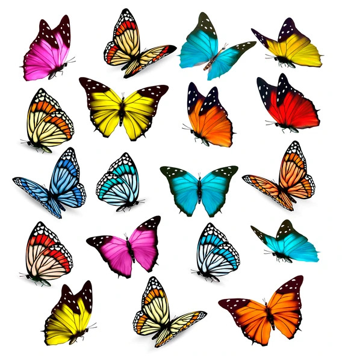

Butterflies

Butterflies are insects belonging to the order Lepidoptera, characterized by their vibrant colors, delicate wings, and fascinating life cycle. They are found in diverse habitats worldwide, ranging from tropical rainforests and temperate woodlands to meadows, gardens, and urban areas. Here's a comprehensive exploration of these captivating and ecologically important insects:
Description
- Physical Characteristics: Butterflies have four wings covered in scales, giving them their characteristic coloration and patterns. They have slender bodies, long antennae, and specialized mouthparts adapted for feeding on nectar and other liquids. Butterflies exhibit a remarkable diversity of shapes, sizes, colors, and wing patterns, with each species displaying unique adaptations for camouflage, mimicry, or visual signaling.
- Size: Butterflies vary widely in size, ranging from tiny species with wingspans of a few centimeters to large species with wingspans exceeding 25 centimeters (10 inches). The largest butterflies include the birdwing butterflies of Southeast Asia and the swallowtail butterflies of the Americas.
- Life Cycle: Butterflies undergo a complete metamorphosis, transitioning through four distinct stages: egg, larva (caterpillar), pupa (chrysalis), and adult. The larval stage is characterized by rapid growth and feeding, while the pupal stage involves dramatic morphological changes as the caterpillar transforms into a butterfly. Adult butterflies emerge from the pupa and engage in feeding, mating, and egg-laying activities.
Behavior
- Feeding Behavior: Adult butterflies primarily feed on nectar from flowers, using their long proboscis to extract liquid nutrients. They are important pollinators, transferring pollen between flowers as they feed, which facilitates plant reproduction and maintains ecosystem diversity. Caterpillars feed on plant leaves and stems, often exhibiting specialized feeding behaviors and host plant preferences.
- Mating Behavior: Butterflies engage in intricate courtship rituals to attract mates and ensure reproductive success. Males typically pursue females, displaying visual cues such as wing displays, aerial acrobatics, or pheromone release to signal their readiness to mate. Once mating occurs, females lay eggs on suitable host plants, where the next generation of caterpillars will hatch and develop.
- Migration: Some butterfly species undertake long-distance migrations, traveling thousands of kilometers between breeding and overwintering sites. These migratory journeys are often triggered by seasonal changes, resource availability, or environmental cues and require precise navigation and energy management to complete successfully.
Conservation Status
- Threats: Butterflies face numerous threats to their survival, including habitat loss and fragmentation, climate change, pesticide use, invasive species, pollution, and disease. Habitat destruction, particularly the loss of native vegetation and the conversion of natural habitats for agriculture or urban development, poses a significant threat to butterfly populations worldwide.
- Declining Populations: Many butterfly species are experiencing population declines and range contractions due to human activities and environmental changes. Loss of larval host plants, disruption of migratory pathways, and exposure to pesticides and pollutants have contributed to widespread declines and extinctions in some regions.
- Conservation Efforts: Conservation efforts for butterflies focus on habitat conservation, species protection, captive breeding and reintroduction programs, habitat restoration, and public education and outreach. Establishing protected areas, implementing agro-environmental schemes, and promoting butterfly-friendly gardening practices are essential for conserving butterfly biodiversity.
Fun Facts
- Longevity: While the lifespan of adult butterflies varies among species, most individuals live only a few weeks to a few months, with some species living up to a year. However, certain migratory species, such as the monarch butterfly, may live longer and undertake multi-generational migrations spanning thousands of kilometers.
- Color Perception: Butterflies have excellent color vision and can perceive a wide range of colors, including ultraviolet wavelengths invisible to humans. They use their color vision for mate selection, foraging, and navigation, relying on visual cues such as flower color, pattern recognition, and landmarks to guide their behavior.
- Mimicry: Butterflies exhibit a fascinating array of mimicry adaptations, with some species resembling toxic or unpalatable models to deter predators. Batesian mimicry involves harmless species imitating the appearance of noxious models, while Müllerian mimicry involves multiple unpalatable species converging on similar warning signals for enhanced protection.
Conservation and Management
- Habitat Protection: Protecting and preserving natural habitats such as meadows, grasslands, forests, and wetlands is essential for maintaining healthy butterfly populations and preserving biodiversity. Establishing protected areas, wildlife corridors, and butterfly-friendly habitats can provide refuges for butterflies and other pollinators.
- Species Recovery: Implementing species-specific conservation measures such as habitat restoration, captive breeding and reintroduction programs, population monitoring, and genetic management can help recover populations of threatened or endangered butterfly species and prevent their extinction.
- Public Education: Educating the public about the ecological importance of butterflies, promoting butterfly-friendly gardening practices, and raising awareness about the threats facing butterfly populations are crucial for fostering positive attitudes and behaviors towards butterfly conservation. Public outreach programs, citizen science initiatives, and educational materials can engage communities in butterfly conservation efforts.
Conclusion
Butterflies are captivating and ecologically important insects that contribute to the beauty and diversity of ecosystems worldwide. By recognizing the value of butterflies as pollinators, indicators of environmental health, and sources of aesthetic inspiration, and by taking proactive measures to protect and conserve butterfly populations and their habitats, we can ensure their continued survival and contribute to the preservation of global biodiversity.